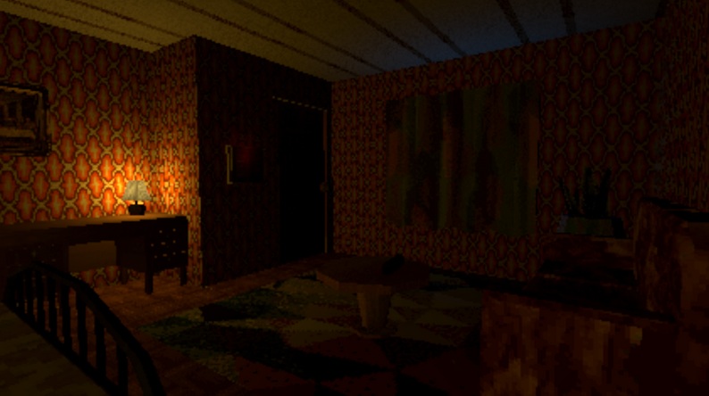
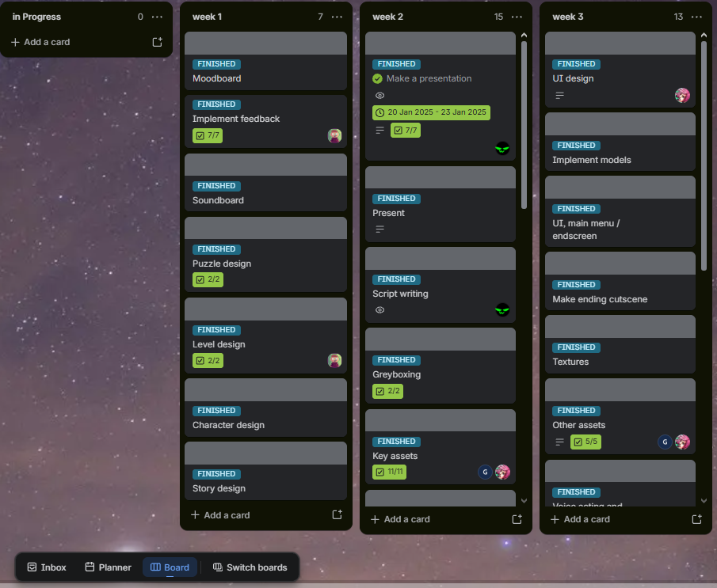

Video Game, Group project
Spooky house
After a kid runs away from his bullies into an abandons house they pass out. as they wake up they find 3 ghosts looking at them while laying in a strangers bed. who are these ghosts? and can they get out?

About the Project
Spooky house a puzzle / story game with interactive characters. Some requirments of school were put on the projects, meaning in this case The assets were all self created.
My Contribution
- Character design (background / personality)
- Story design
- Script writing
- Voice actor
Project Details
Role
Team lead - for the Group, Lead designer, voice actor
Engine
Unity
Team Size
6 People
Duration
3 weeks
Development Process
See below for some screenshots and documents of the development process and their contributors.
As Spooky house was a group project we needed a way to know what everyone was working on and when it needed to be done. For this we made use of Trello and their boards, we utilised a system of having a set of tasks each weeks during the 3 week process. at the end of the week every task had to be done and we got together every 2 days to discuss process, problems and idea's. In the end we managed to finish the project cleanly without having to stress about not having finished things or having ran into unknown issue's.

The characters are a core part of Spooky house. Since these characters were basically the main interaction of the game they had to be well thought out. I wrote out their personality's, Their flaws, why they were still roaming the house and what kind of interaction they have with the player. In total 6 characters were written of which 3 were chosen for the final game.
the final characters in the game were
- Frank
- Charlie
- Harry
Below you can find the script for the character voicelines, these were all written by me.
Voice acting was another big part of Spooky house, as one of the script writers and a voice actor myself I was tasked with helping the others get their lines right and making the lines feel emotionally correct, meaning I was sending back feedback constantly. While unfortunately we were unable to do this in person (due to the different living locations of all of us.) we still managed to eventually get all the lines recorded and send to the sound editor of our group.
Reflecting on it now, it would have been smart to record all lines in the same place as we ran into the issue of different volume levels on each character due to the use of different microphones. This also wasn't mentioned to our sound designer which resulted in some characters being very quiet and some being very loud within the final product itself.
Final Result
In the end we had a lot of fun creating Spooky house.
I learned to work closely with other roles to make sure the project went smoothly as team lead,
I enjoyed working together with Ynse in creating the characters and story of our game and I had great fun Recording and directing others
in recording the voice lines of the game.
There are still some area's of improvement looking back such as making the voice lines and its sound design a bit more even over all the voicelines,
however I think for a 3 week project this one did pretty well.